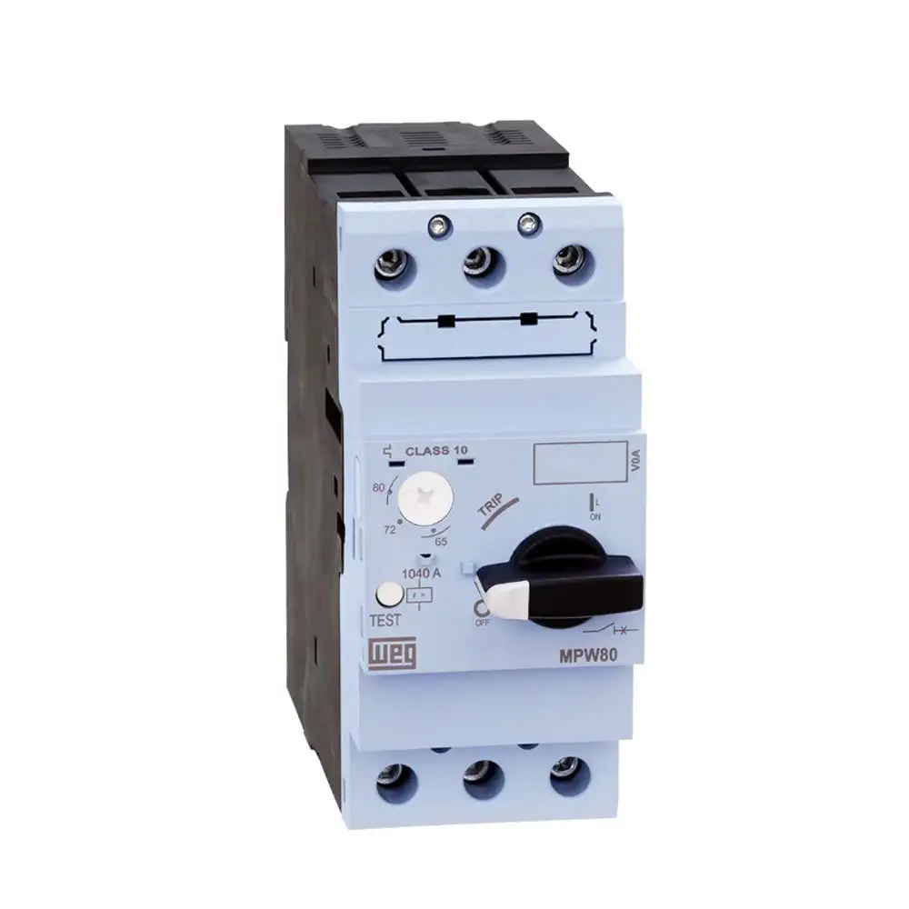
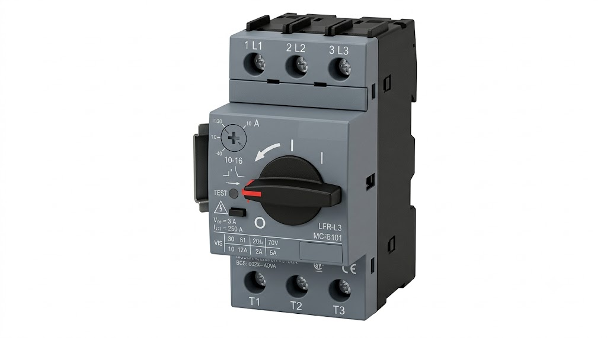
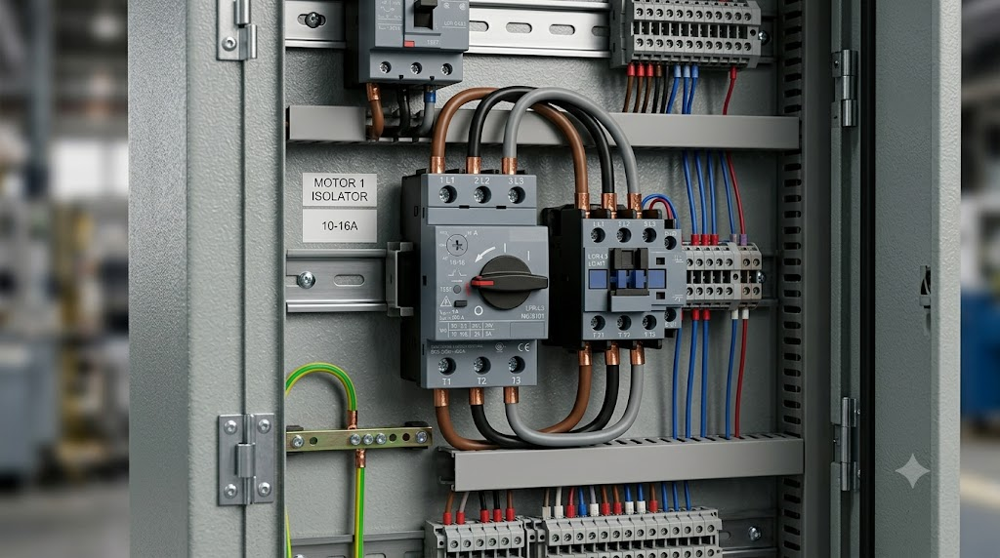

Disjuntor Motor
Dispositivo de proteção termomagnética projetado especificamente para motores elétricos.
Conceito e Aplicação
O disjuntor motor é um dispositivo de proteção utilizado para proteger motores elétricos contra sobrecarga, curto-circuito e falhas elétricas em sistemas industriais. Combina funções de proteção e manobra em um único dispositivo compacto.
- Proteção contra sobrecarga de motores elétricos;
- Proteção contra curto-circuito;
- Permite ajuste da corrente de disparo conforme o motor;
- Substituição do conjunto contator + relé térmico em aplicações simples.
Informações Complementares

Funcionamento
Realiza a proteção e o acionamento seguro de motores elétricos, combinando funções termomagnéticas em um único dispositivo.

Aplicações
Aplicado em motores e sistemas de automação industrial para proteção e comando de cargas elétricas.

Vantagens
Oferece proteção eficiente, ajuste de corrente e maior segurança para motores industriais em um dispositivo compacto.
Empresas
A ABB, a Eaton e a Legrand são algumas das principais fabricantes de disjuntores motores utilizados em comandos elétricos, painéis industriais e sistemas de automação.
: Líder global em eletrificação com linha completa de disjuntores para motores de alta confiabilidade e desempenho.
: Especialista em gerenciamento de energia com soluções de proteção para motores amplamente utilizadas na indústria.
: Empresa francesa com presença global, fabricante de disjuntores para motores com foco em segurança e confiabilidade.